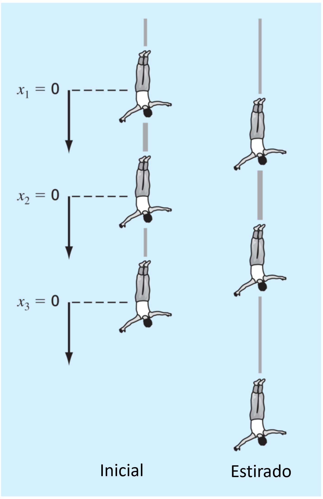
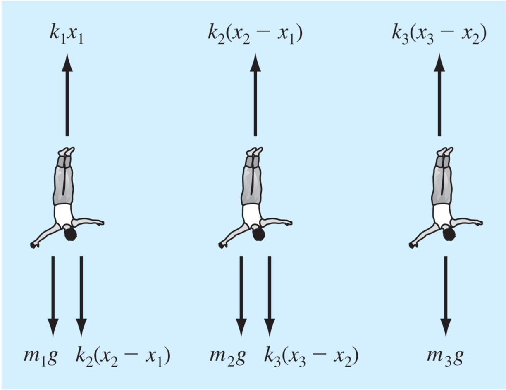
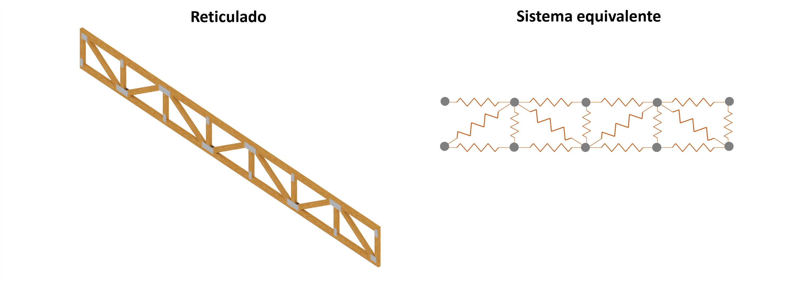
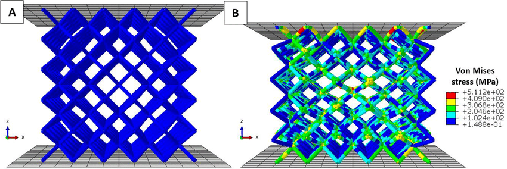
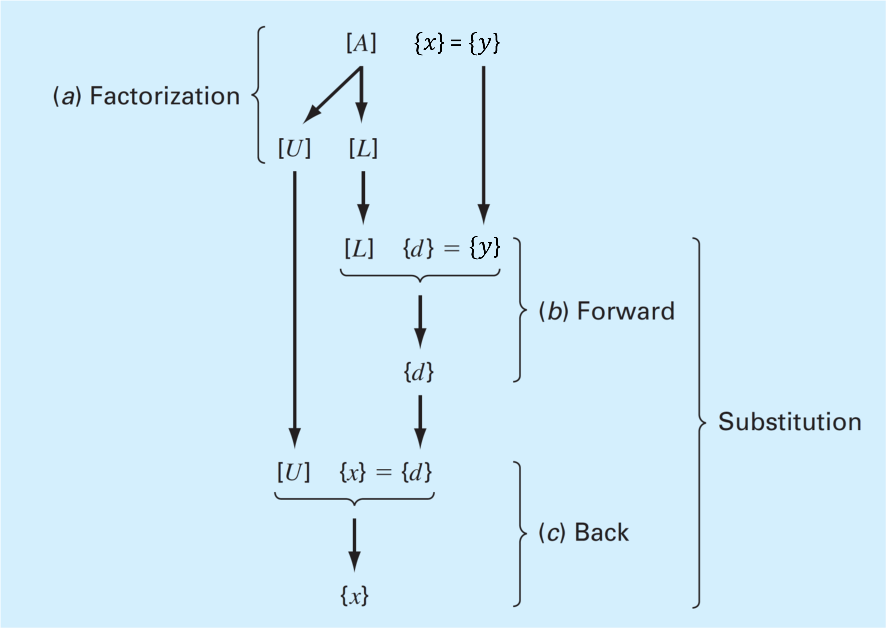

2. Algebra lineal y sistemas de ecuaciones lineales#
2.1. Introducción a los sistemas de ecuaciones lineales#
Consideremos el caso de tres personas conectada por cuerdas elásticas.
{kind=link}
En la primera figura (a), los tres cuerpos están en la posición inicial de forma que los elásticos están totalmente extendidos, pero no estirados. Definimos el cambio en la posición inicial de cada persona, como: \(x_1\), \(x_2\), \(x_3\).
Cuando los cuerpos se dejan caer, los elásticos se extienden por la gravedad y cada cuerpo toma la posición indicada en (b).
Analizamos el cambio en la posición de cada persona utilizando la ley de Newton:
Diagrama de cuerpo libre
{kind=link}
En condiciones de equilibrio:
En el ejemplo anterior, derivamos un sistema de ecuaciones lineales con 3 incognitas el cual podemos resolver con técnicas analíticas.
Sin embargo, si el sistema es más grande tenemos un sistema de ecuaciones con un gran número de incognitas y debemos recurrir a métodos más eficientes para poder resolverlos.
Por ejemplo, un reticulado de barras, donde cada barra se puede modelar como un resorte.
{kind=link}
Este es el enfoque que utilizan los software de modelación computacional, tales como: el método de elementos finitos (FEM), métodos de los momentos (MoM), o volúmenes finitos (VEM).
{kind=link}
2.1.1. Caracterización de sistemas lineales#
Decimos que una ecuación es lineal cuando:
Todas sus incognitas están únicamente separadas por sumas o restas
El exponente de cada incognita es \(1\).
Por ejemplo,
\(3x_1 + 4x_2 - 3 = -5x_3\) (lineal)
\(\frac{-3x_1 + x_2}{x_3} = 2\) (no es lineal, pero se puede linealizar como \( -3x_1 + x_2 -2x_3 = 0 )\)
\(x_1 x_2 + x_3 = 5\) (no lineal)
\(x_1 + 3x_2 + x_3^4 = 3\) (no lineal)
Un sistema de ecuaciones lineales esta compuesto por más de una ecuación lineal, tal como en el ejemplo de las personas conectadas por cuerdas elásticas
2.1.2. Representación matricial#
Para resolver un sistema de ecuaciones lineales utilizamos la representación matricial. Esto permite la implementación computacional de los algoritmos.
Por ejemplo, el sistema de ecuaciones lineales generalizado:
donde \(a_{i,j}\) y \(y_i\) son números reales.
Toma la siguiente forma en su representación matricial
O, similarmente,
donde:
De igual forma, el problema de las personas sujetas con elásticos,
se puede representar de forma matricial como:
2.1.3. Repaso de matrices#
2.1.3.1. Determinante (\(|A|\))#
Se denota como \(\mathrm{det}(A)\), o \(|A|\). Solo se aplica a matrices cuadradas.
Por ejemplo, para una matriz \(2\times2\), el determinante es:
para una matrix \(3\times3\):
2.1.3.2. Matriz identidad (\(I\))#
Es una matriz cuadarada con \(1\) en la diagonal, y \(0\) en el resto de los elementos:
2.1.3.3. Matriz inversa (\(A^{-1}\))#
Definimos la matriz inversa de \(A\) como: \(A^{-1}\).
Solo existe para matrices cuadradas.
El producto de la matriz inversa por su diagonal es igual a la matriz identidad \(A\cdot A^{-1} = I\)
Para una matriz \(2\times2\), la matriz inversa está definida por:
La solución analítica para determinar la matriz inversa se vuelve mas complicada a medida que aumentan las dimensiones de la matriz.
2.1.3.4. Norma matricial#
Es una extensión del módulo o norma vectorial. Existen distintos formas de definir una norma matricial. La más conocida es la p-norma:
Para \(p = 2\), se llama norma de Frobenius
2.1.4. Representación en python#
Para representar sistemas de ecuaciones lineales en python utilizamos variables numpy array de la libreria numpy.
Por ejemplo, para representar el sistema:
import numpy as np
A = np.array([[ 3, 1, -5],
[-2, -2, 5],
[ 8, 3, 0]])
y = np.array([[2], [5], [-3]])
print('A:\n',A)
print('\ny:\n',y)
A:
[[ 3 1 -5]
[-2 -2 5]
[ 8 3 0]]
y:
[[ 2]
[ 5]
[-3]]
El módulo linalg de numpy tiene funciones predefinidas para calcular la norma (norm), determinante (det), matriz inversa (inv). La matriz identidad (eye) viene desde numpy
from numpy.linalg import norm, det, inv # norm, det y inv son parte de numpy.linalg
print('norm(A) = %.4f (Frobenius por defecto)'% norm(A))
print('det(A) = %.4f' % det(A))
print('inv(A):\n',inv(A))
print('eye(3) = (Matriz identidad 3x3) \n', np.eye(3)) # eye es parte de numpy
norm(A) = 11.8743 (Frobenius por defecto)
det(A) = -55.0000
inv(A):
[[ 0.27272727 0.27272727 0.09090909]
[-0.72727273 -0.72727273 0.09090909]
[-0.18181818 0.01818182 0.07272727]]
eye(3) = (Matriz identidad 3x3)
[[1. 0. 0.]
[0. 1. 0.]
[0. 0. 1.]]
Notar que
norm,detyinvson parte de la libreríanumpy.linalg, mientras queeyees parte denumpy.
Comprobamos la identidad \(AA^{-1} = I\) usando python.
A.dot(inv(A)) # usamos numpy.dot() para multiplicar matrices
array([[ 1.00000000e+00, -9.36750677e-17, -4.16333634e-17],
[ 5.55111512e-17, 1.00000000e+00, -1.38777878e-17],
[ 0.00000000e+00, 0.00000000e+00, 1.00000000e+00]])
Más información de numpy.linalg en la documentación oficial
2.2. Caracterización de sistemas de ecuaciones lineales#
2.2.1. Solución única (rango de una matriz)#
Un sistema de ecuaciones lineales tiene solución única, si y solo si el número de incognitas es igual al número de ecuaciones linealmente independientes en el sistema.
Por ejemplo, el siguiente sistema de ecuaciones lineales:
Tiene solo dos ecuaciones linealmente independientes, ya que \((\mathrm{ec.~}3) = 2\times(\mathrm{ec.~}1) + (\mathrm{ec.~}2)\)
Como el sistema esta compuesto por 2 ecuaciones lineales y 3 incognitas, este tiene infinitas soluciones.
Una forma genérica de estudiar si el sistema tiene 1, infinitas o ninguna solución es mediante el rango de matrices.
Para una matriz \(A\), definimos el rango (\(\mathrm{rank}(A)\)) como el número de filas (o columnas) linealmente independenientes.
Consideremos la matrix aumentada \([A|y]\) como:
donde \(A\) es una matriz \(m\times n\). Es decir, \(m\) ecuaciones y \(n\) incognitas.
El sistema tiene solución única si \(\mathrm{rank}\left([A|y]\right) = \mathrm{rank}\left(A\right)\), y \(\mathrm{rank}\left(A\right) = n\)
El sistema tiene infinitas soluciones si \(\mathrm{rank}\left([A|y]\right) = \mathrm{rank}\left(A\right)\), y \(\mathrm{rank}\left(A\right) < n\)
El no tiene soluciones si \(\mathrm{rank}\left([A|y]\right) > \mathrm{rank}\left(A\right)\)
En python, \(\mathrm{rank}(A)\) está dado por la función
matrix_rankde la libreríanumpy.linalg
Aplicado al ejemplo anterior:
from numpy.linalg import matrix_rank
M = np.array([[ 3, 1, -5],
[-2, -2, 5],
[ 4, 0, -5]])
y = np.array([[2], [5], [9]])
My_aug = np.concatenate((M,y),axis = 1)
print('[M|y] =\n', My_aug)
print('\n')
print('rank(M|b) =', matrix_rank(My_aug))
print('rank(M) =', matrix_rank(M))
print('Número de incognitas, n =', M.shape[1])
[M|y] =
[[ 3 1 -5 2]
[-2 -2 5 5]
[ 4 0 -5 9]]
rank(M|b) = 2
rank(M) = 2
Número de incognitas, n = 3
A
array([[ 3, 1, -5],
[-2, -2, 5],
[ 8, 3, 0]])
np.sum(A)
11
np.sum(A,axis=0)
array([9, 2, 0])
np.sum(A,axis=1)
array([-1, 1, 11])
Por lo tanto, el sistema tiene infinitas soluciones
2.2.2. Matriz singular#
La forma más directa de resolver un sistema es mediante la matriz inversa: \(x = A^{-1}y\). Sin embargo, la estabilidad de esta expresión dependerá si la matriz es invertible o no.
Recordamos de álgebra lineal, que la matriz inversa está dada por
donde \(\mathrm{adj}(A)\) es la matriz adjunta.
Si \(\mathrm{det}(A) = 0\), decimos que la matriz es singular y, por lo tanto, no es invertible.
Por ejemplo, la matriz:
es singular.
P = np.array([[ 1, 2,-1],
[ 2, 3, 0],
[ 1, 1, 1]])
print('det(P) = ', det(P))
det(P) = 0.0
Como resultado, al intentar calcular la matriz inversa, python nos arrojará un error.
print('inv(P) = ', inv(P))
---------------------------------------------------------------------------
LinAlgError Traceback (most recent call last)
Cell In[11], line 1
----> 1 print('inv(P) = ', inv(P))
File <__array_function__ internals>:200, in inv(*args, **kwargs)
File ~/miniconda3/lib/python3.11/site-packages/numpy/linalg/linalg.py:538, in inv(a)
536 signature = 'D->D' if isComplexType(t) else 'd->d'
537 extobj = get_linalg_error_extobj(_raise_linalgerror_singular)
--> 538 ainv = _umath_linalg.inv(a, signature=signature, extobj=extobj)
539 return wrap(ainv.astype(result_t, copy=False))
File ~/miniconda3/lib/python3.11/site-packages/numpy/linalg/linalg.py:89, in _raise_linalgerror_singular(err, flag)
88 def _raise_linalgerror_singular(err, flag):
---> 89 raise LinAlgError("Singular matrix")
LinAlgError: Singular matrix
Notar que el rango de la matriz \(P\) es 2.
matrix_rank(P)
Nota Una matriz \(A\) de tamaño \(n\times n\), será siempre singular si \(\mathrm{rank(A)} < n\) y viceversa.
2.2.3. Condición de una matriz#
Decimos que una matriz \(A\) está mal condicionada, si \(\mathrm{det}(A) \approx 0\).
Si bien las matrices mal condicionadas tienen inversa, son numericamente problemáticas, ya que pueden inducir errores de redondeo, o diferencias numericas excesivamente grandes entre elementos (overflow) como resultado de la división por un número muy pequeño
Para determinar si una matriz está mal condicionada utilizamos el número de condición, definido como:
Matrices mal condicionadas están caracterizadas por “\(\mathrm{Cond}(A)\)” altos
En python, \(\mathrm{Cond}(A)\) está dado por la función cond de la librería numpy.linalg
from numpy.linalg import cond
print('Cond(P) = ',cond(P))
Cond(P) = 1.7784106389713206e+16
Notar que \(\mathrm{det}(A)= 0\), no necesariamente significa que el sistema no tiene solución
Por ejemplo, en el ejemplo anterior
print('M\n', M)
print('\n')
print('det(M) = ', det(M))
Sin embargo, como habíamos determinado anteriormente, el sistema tiene múltiples soluciones.
2.3. Métodos directos para resolver sistemas de ecuaciones#
2.3.1. Eliminación de Gauss#
Es un algoritmo para resolver sistemas ecuaciones lineales basado en convertir la matriz \(A\) en una matriz triangular superior. El sistema toma la forma:
Esta ecuación puede resolverse fácilmente, comenzando por \(x_4 = y_4'/a_{4,4}'\), luego continuamos con \(x_3 = \frac{y_3' - a_{3,4}x_4}{ a_{3,4}}\), y así sucesivamente hasta llegar a \(x_1\). En otras palabras, utilizamos sustitución hacia atrás, resolviendo el sistema desde abajo hacia arriba.
Si \(A\) es una matriz triangular inferior, resolveríamos el problema de arriba hacia abajo utilizando sustitución hacia adelante.
La mejor forma de entender el método de eliminación Gauseana es con un ejemplo:
Paso 1: Transformamos el sistema de ecuaciones en su forma matricial \(Ax=y\).
Paso 2: Determinar la matriz aumentada [A, y]
Paso 3: Determinamos la matriz triangular superior utilizando pivoteo parcial y eliminación.
Comenzando por la primera columna. Primero, permutamos las filas de manera que el coeficiente con mayor valor absoluto quede en la primera fila (pivoteo parcial):
Luego, eliminamos los otros coeficientes de la primera columna, comenzando por el segundo. Multiplicamos la primera fila por \(1/2\) y la restamos a la segunda fila:
Después, multiplicamos la primera fila por \(- 1/4\) y la restamos a la tercera fila:
Repetimos el proceso con la segunda columna. Primero, permutamos las filas:
Luego, eliminamos el coeficiente inferior. Multiplicamos por la segunda fila por \(1/2\) y restamos a la tercera fila:
Paso 4. Realizamos sustitución hacia atras.
El método de eliminación Gaussiana es de complejidad \(O(N^3)\)
2.3.2. Factorización LU#
Es posible demostrar que cualquier matriz cuadrada \(A\) puede ser expresada como el producto de una matriz triangular inferior \(L\), y una matriz triangular superior \(U\).
El proceso para obtener \(L\) y \(U\) es conocido como descomposición o factorización LU. Es el método de solución de ecuaciones lineales más confiable y utilizado.
El tipo de factorización LU no es única, ya que existen múltiples formas de representar \(L\) y \(U\) para un \(A\) dado. Así, definimos tres tipos de factorizaciones comúnmente utilizadas:
Nombre |
Condiciones |
|---|---|
Doolittle |
\(L_{ii} = 1\), \(i = 1, 2,... \), \(n\) |
Crout |
\(U_{ii} = 1\), \(i = 1, 2,... \), \(n\) |
Choleski |
\(L = U^T\) |
Una vez ejecutada la factorización, resolvemos el sistema \(Ax = y\).
{kind=link}
Dado el sistema \(LUx = y\):
Primero resolvemos el sistema \(Ld = y\), por sustitución hacia adelante (\(d = Ux\)).
Luego, resolvemos el sistema \(Ux = d\), por sustitución hacia atrás.
A diferencia del método de eliminación de Gauss, la factorizacion LU no depende del vector \(y\). Por lo tanto, es conveniente para resolver el sistema \(Ax=y\), con múltiples valores de \(y\).
Debido a que la factorización LU está basada en eliminación de Gauss, el orden de complejidad es \(O(N^3)\).
Existen diversos métodos para obtener las matrices \(L\) y \(U\). Uno de ellos es mediante eliminación Gaussiana.
Como mostramos anteriormente, el método de eliminación de Gauss permite determinar una matriz triangular superior \(U\).
La matriz triangular inferior (\(L\)), aunque no se mostró de forma explicita, estaría conformada por “\(1\)” en la diagonal, y los múltiplos utilizados para eliminar los elementos de las columnas.
En general, se cumple la siguiente relación:
donde \(P\) es la matriz de permutaciones.
Por ejemplo, en el ejercicio anterior:
Tenemos:
A = np.array([[ 4, 3, -5],
[-2, -4, 5],
[ 8, 8, 0]])
L = np.array([[ 1, 0, 0],
[-0.25, 1, 0],
[ 0.5, 0.5, 1]])
U = np.array([[ 8, 8, 0],
[ 0, -2, 5],
[ 0, 0,-7.5]])
P = np.array([[0, 0, 1],
[0, 1, 0],
[1, 0, 0]])
print('A=\n', A)
print('\n')
print('P*A =\n',np.dot(P,A))
print('\n')
print('L*U =\n',np.dot(L,U))
A=
[[ 4 3 -5]
[-2 -4 5]
[ 8 8 0]]
P*A =
[[ 8 8 0]
[-2 -4 5]
[ 4 3 -5]]
L*U =
[[ 8. 8. 0.]
[-2. -4. 5.]
[ 4. 3. -5.]]
Notar que, considerando la permutación, la solución al sistema \(Ax=y\) está dada por:
2.4. Métodos iterativos para resolver sistemas de ecuaciones#
Los métodos iterativos están basados en una serie repetitiva de operaciones, comenzando por un valor inicial.
A diferencia de los métodos directos, el número de operaciones está condicionado por la convergencia y el valor inicial escogido
Las ventajas de los métodos iterativos es que tienen un orden de complejidad menor que los métodos directos, y no requieren gran capacidad de memoria (recordemos que factorización LU requiere almacenar las matrices L, U y P)
La gran desventaja radica en la convergencia de los algoritmos. Una condición suficiente, pero no necesaria es que la matriz \(A\) debe ser diagonal dominante, es decir, los elementos de la diagonal, \(a_{i,i}\), deben satisfacer:
Estos métodos se utilizan, generalmente, en simulaciones con elementos finitos (FEM), o volúmenes finitos (VEM).
2.4.1. Gauss-Seidel#
El algoritmo se puede resumir en los siguientes pasos:
Paso 1. Asumimos un valor inicial para \(x_2^{(0)}, x_3^{(0)}, \cdots, x_n^{(0)}\) (con excepción de \(x_1^{(0)}\)).
Paso 2. Calculamos un nuevo valor para \(x_1^{(1)}\) mediante:
Paso 3. Utilizando el nuevo valor \(x_1^{(1)}\) y el resto de \(x^{(0)}\) (con excepción de \(x_2^{(0)}\)), determinamos \(x_2^{(1)}\).
Paso 4. Repetimos el paso 3 hasta completar todos los elementos del vector \(x\).
Paso 5. Continuamos con la iteración hasta que el valor de \(x\) converge dentro de una tolerancia \(\varepsilon\), definida por:
Por ejemplo, resolvamos el siguiente sistema de ecuaciones con el métodod de Gauss-Seidel:
import numpy as np
A = np.array(
[[ 8., 3., -3.],
[-2., -8., 5.],
[3., 5., 10.]])
y = np.array([14., 5., -8.])
print('A = \n', A)
print('y = ', y)
A =
[[ 8. 3. -3.]
[-2. -8. 5.]
[ 3. 5. 10.]]
y = [14. 5. -8.]
Primero, verificamos que la matriz es diagonal dominante:
# coeficientes de la diagonal
diagA = np.diag(np.abs(A)) # extraemos los elementos de la diagonal de A
print('|a_ii| = ',diagA) # mostramos resultado
# suma de los a_ij fuera de la diagonal
sum_aij = np.sum(np.abs(A), axis=1) # suma de elementos por fila
off_diagA = sum_aij - diagA # sume elementos fuera de la diagonal
print('sum(|a_ij|, i!=j) =',off_diagA) # mostramos resultado
# evaluamos condición de matriz diagonal dominante
if np.all(diagA >= off_diagA):
print('la matriz es diagonal dominante')
else:
print('la matriz no es diagonal dominante')
|a_ii| = [ 8. 8. 10.]
sum(|a_ij|, i!=j) = [6. 7. 8.]
la matriz es diagonal dominante
Luego, elaboramos una función para ejecutar el algoritmo de Gauss-Seidel
def gauss_seidel(A,y,x0, max_iter = 50, abs_tol = 1E-3, verbose = False):
'''
Algoritmo Gauss-Seidel para resolver un sistema Ax = y
Parametros
------------
- A : ndarray
matriz de coeficientes (debe ser de dimensiones n x n)
- y : ndarray
vector columna "y" (dimensión n x 1)
- x0 : ndarray
vector "x" inicial (dimensión n x 1)
- max_iter : int
número máximo de iteraciones (50 por defecto)
- abs_tol : float
tolerancia al error absoluto (1E-3 por defecto)
- verbose: bool
generar mensajes al usuario ("False" por defecto)
Return
-------
- xsol: ndarray
solución del sistema (dimensión n x 1)
- error_abs: float
error absoluto
'''
# -------------------------------- Importamos funciones de numpy ------------------------------------
from numpy import copy, concatenate
from numpy.linalg import norm, matrix_rank
# -------------------------------- Parámetros de entrada --------------------------------------------
converged = False # verificar convergencia (falso por defecto)
nrows, ncols = A.shape # registramos número de filas y columnas
# ------------------------ verificamos si el sistema tiene solución única ---------------------------
y = y.reshape(-1,1) # transformamos y a vector columna
Ay = concatenate((A,y),axis = 1) # matriz aumentada
n = len(y) # número de incognitas
assert matrix_rank(Ay) == matrix_rank(A) and matrix_rank(A) == n, 'El sistema no tiene solución única'
# ------------------------------ Algoritmo Gauss-Seidel ---------------------------------------------
x = x0 # pasamos el valor inicial a "x"
for k in range(1, max_iter): # iteraciones
x_old = copy(x) # copiamos iteración k-1
# Perform iteration
for i in range(n): # recorrer filas
sum2 = sum(A[i][j] * x_old[j] for j in range(i + 1, n)) # sum(aij*xj^(k-1), j > i + 1)
sum1 = sum(A[i][j] * x[j] for j in range(i)) # sum(aij*xj^(k) , j < i )
x[i] = (y[i] - sum1 - sum2) / A[i][i] # xi^k = (yi - sum(aij*xj^(k-1), i != j))/aii
# determinamos el error absoluto con norma Frobenius
error_abs = norm(x-x_old) # || x^k - x^(k-1)||
if verbose:
print("iter =",k,'; x =',x) # mostramos resultado de iteración (opcional)
# verificamos convergencia con || x^k - x^(k-1)|| < abs_tol
if error_abs < abs_tol:
converged = True
if verbose:
print('Converged!')
break # terminamos loop "for k in range(1, Niter)"
# --------------------- Preparamos output ----------------------------------------
if not converged: # si no converge entregamos una advertencia al usuario
print('No converge, incrementar número de iteraciones')
return x, error_abs
Evaluamos nuestra función y la solución de Gauss-Seidel
x = np.array([0.,0.,0.]) # valores iniciales
xsol, Eabs = gauss_seidel(A,y,x, verbose = True, abs_tol = 1E-3)
iter = 1 ; x = [ 1.75 -1.0625 -0.79375]
iter = 2 ; x = [ 1.85078125 -1.58378906 -0.56333984]
iter = 3 ; x = [ 2.13266846 -1.51025452 -0.68467328]
iter = 4 ; x = [ 2.05959296 -1.56781904 -0.63396837]
iter = 5 ; x = [ 2.100194 -1.54627873 -0.65691883]
iter = 6 ; x = [ 2.08350996 -1.55645176 -0.64682711]
iter = 7 ; x = [ 2.09110925 -1.55204425 -0.65131065]
iter = 8 ; x = [ 2.0877751 -1.55401293 -0.64932607]
iter = 9 ; x = [ 2.08925757 -1.55314318 -0.65020568]
iter = 10 ; x = [ 2.08860156 -1.55352894 -0.649816 ]
Converged!
Verificamos si la solución es correcta analizando \(Ax_\mathrm{sol} = y\).
print('Error absoluto = ', norm(A.dot(xsol) - y))
Error absoluto = 0.003034471171707093
Notar que el error absoluto de \(\| Ax_\mathrm{sol} - y\| \gt \varepsilon\). Esto debido a que el criterio de convergencia se estableció en base a \(\| x^{(k)} - x^{(k-1)}\| \lt \varepsilon\). Sin embargo, el error es proporcional a la tolerancia, de manera que siempre podremos mejorar nuestra solución reduciendo el valor de \(\varepsilon\) (compruebe cambiando abs_tol en gauss_seidel).
Debido a que agregamos una descripción de la función, podemos revisar los argumentos y output de la función usando help o shift + tab
help(gauss_seidel)
Help on function gauss_seidel in module __main__:
gauss_seidel(A, y, x0, max_iter=50, abs_tol=0.001, verbose=False)
Algoritmo Gauss-Seidel para resolver un sistema Ax = y
Parametros
------------
- A : ndarray
matriz de coeficientes (debe ser de dimensiones n x n)
- y : ndarray
vector columna "y" (dimensión n x 1)
- x0 : ndarray
vector "x" inicial (dimensión n x 1)
- max_iter : int
número máximo de iteraciones (50 por defecto)
- abs_tol : float
tolerancia al error absoluto (1E-3 por defecto)
- verbose: bool
generar mensajes al usuario ("False" por defecto)
Return
-------
- xsol: ndarray
solución del sistema (dimensión n x 1)
- error_abs: float
error absoluto
2.5. Solución de sistemas de ecuaciones lineales con python#
En python la forma más facil de resolver sistemas de ecuaciones lineal es mediante la función solve de numpy.linalg. Esta función utiliza factorización LU para resolver el sistema.
Por ejemplo, tomemos el ejemplo de las personas conectadas por elásticos:
Persona |
Masa (kg) |
Constante del resorte (N/m) |
Longitud incial del elástico |
|---|---|---|---|
primera |
60 |
50 |
20 |
segunda |
70 |
100 |
20 |
tercera |
80 |
50 |
20 |
Tenemos un sistema de la forma:
import numpy as np
A = np.array([[ 150, -100, 0],
[-100, 150, -50],
[ 0, -50, 50]])
y = np.array([588.6, 686.7, 784.8])
x = np.linalg.solve(A, y)
print(x)
[41.202 55.917 71.613]
Notar que en este problema \(x_1\), \(x_2\) y \(x_3\) representan las posiciones relativas de las personas. Así la posición final está dada por:
x_inic = [20, 40, 60] # posición inicial
print('Posición final de las personas: ', x + x_inic)
Posición final de las personas: [ 61.202 95.917 131.613]
Para conocer el valor explícito de las matrices \(L\), \(U\) \(P\), podemos usar la función lu de la librería scipy.
from scipy.linalg import lu
P, L, U = lu(A)
print('P:\n', P)
print('L:\n', L)
print('U:\n', U)
print('LU:\n',np.dot(L, U))
P:
[[1. 0. 0.]
[0. 1. 0.]
[0. 0. 1.]]
L:
[[ 1. 0. 0. ]
[-0.66666667 1. 0. ]
[ 0. -0.6 1. ]]
U:
[[ 150. -100. 0. ]
[ 0. 83.33333333 -50. ]
[ 0. 0. 20. ]]
LU:
[[ 150. -100. 0.]
[-100. 150. -50.]
[ 0. -50. 50.]]
2.6. Referencias#
Kong Q., Siauw T., Bayen A. M. Chapter 14: Linear Algebra and Systems of Linear Equations in Python Programming and Numerical Methods – A Guide for Engineers and Scientists, 1st Ed., Academic Press, 2021
Chapra S., Canale R. Parte tres: Ecuaciones algebraicas lineales en Métodos Numéricos para Ingenieros, 6ta Ed., McGraw Hill, 2011